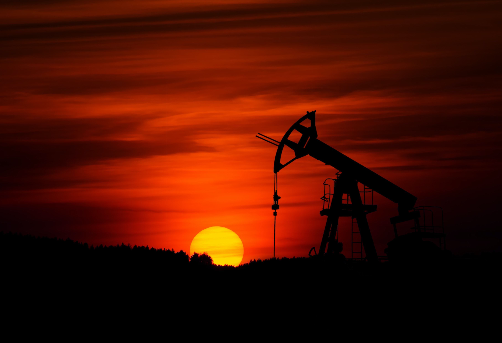

關於油品介紹

推算在數億年前，大量的浮游生物及動植物死亡之後他們的殘骸，堆積在海底下逐漸形成沈積物，由於沈積物的重量，使這地區因而持續下陷，形成了沈積盆地。這 些埋藏在沈積盆地內的動植物殘骸，在缺氧環境下經細菌作用將碳水化合物中的氧逐漸消耗掉，再隨著埋藏深度的增加，溫度與壓力也相對提高，經過數百萬年後， 有機物逐漸受熱裂解出油氣，但並不是每一個沈積盆地都可以產生油氣，要看生油岩層所含油母質的種類及其成熟度而定。由於當初沈積環境的不同，則有形成氣態 的天然氣、液態的石油與固態的煤炭差異。一般而言，可以生油的岩層稱為生油層如頁岩、泥岩。